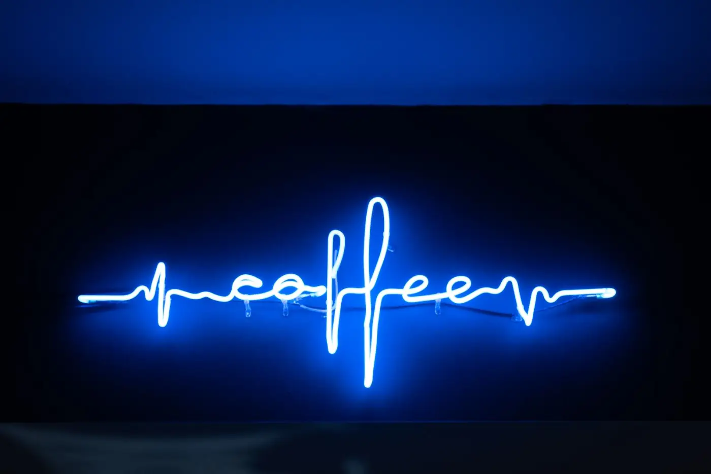
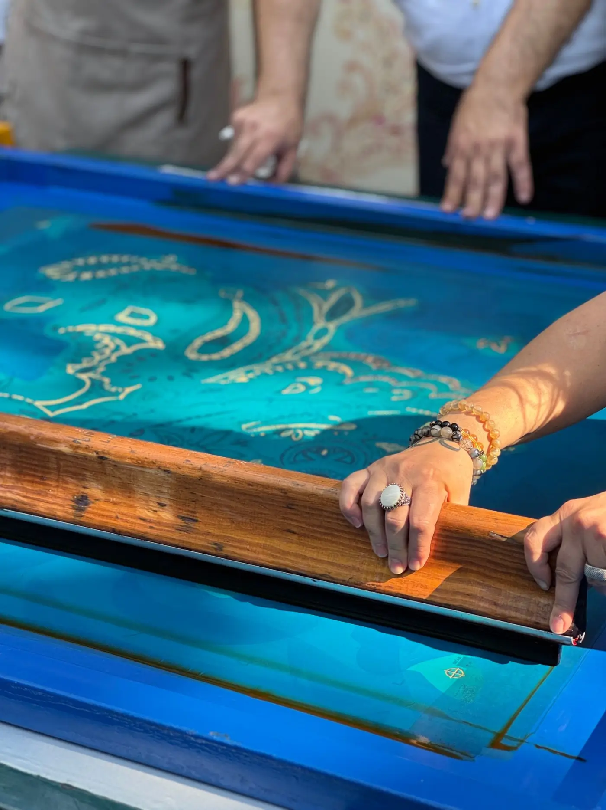
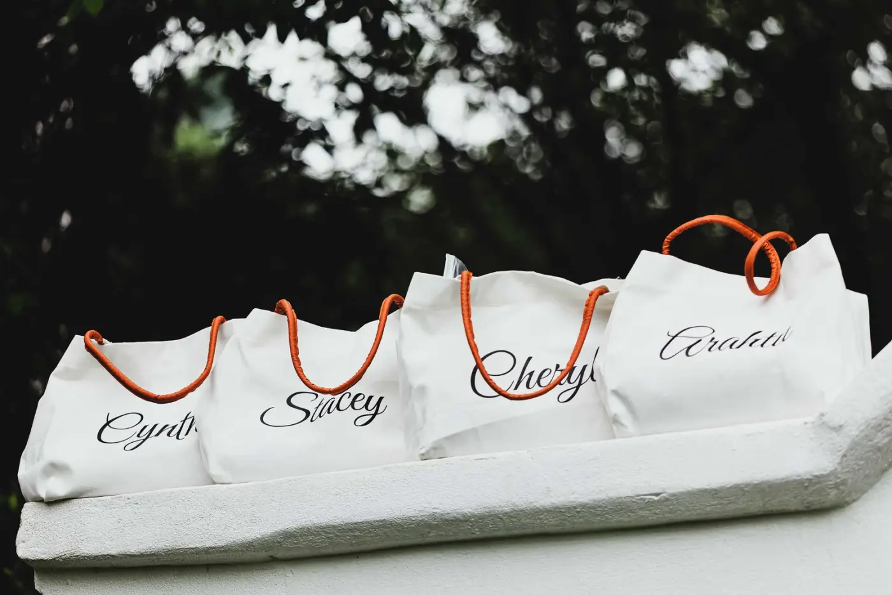
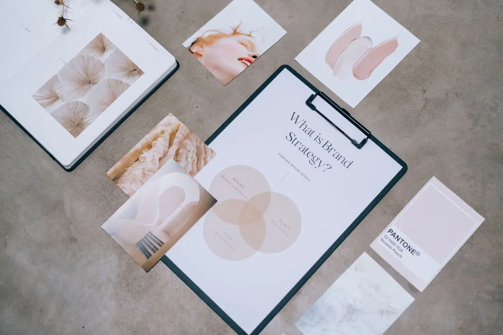
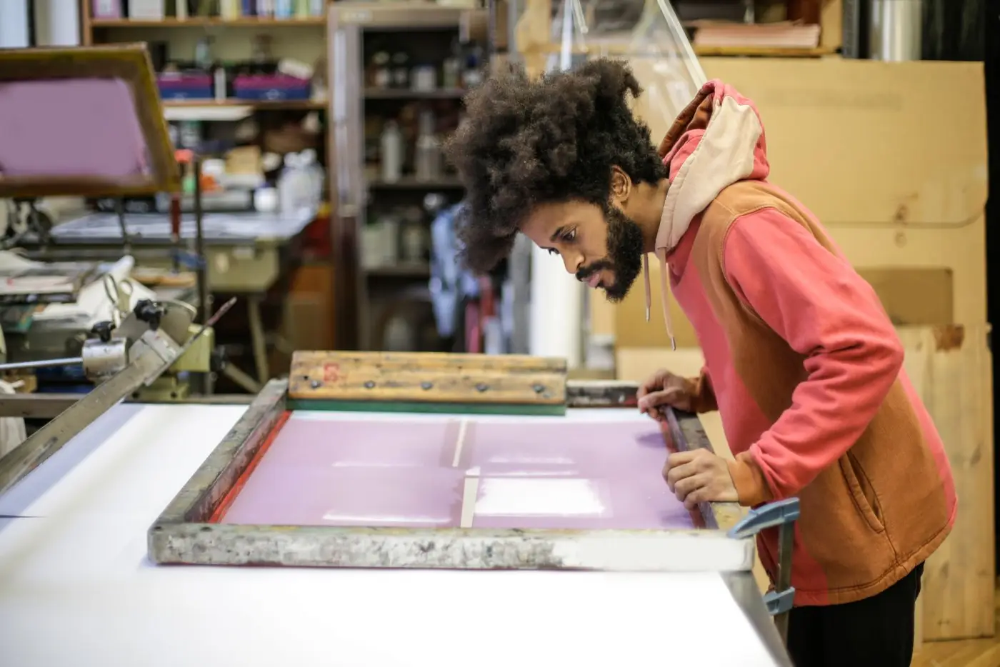

3locales abiertos en 14 meses tras el cambio de marca
Pulso Café
Identidad y señalética para un café de especialidad de la calle 57.
- Identidad
- Señalética
- 2025
Colmena es un estudio de marca en Chapinero, Bogotá. Hacemos identidad, empaque y señalética para negocios independientes, y medimos qué cambió un año después.

Identidad y señalética para un café de especialidad de la calle 57.

Marca y estampados para un taller de textiles serigrafiados en Paipa, Boyacá.

Empaque y sistema de etiquetas escritas a mano para una tienda de regalos en Usaquén.

Sistema de identidad para una red de consultorios de fisioterapia en Bogotá y Chía.

Identidad para un colectivo de impresión del sur de Bogotá, pensada para imprimirse en su propio taller.